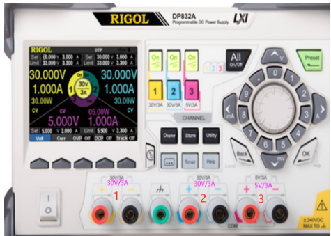
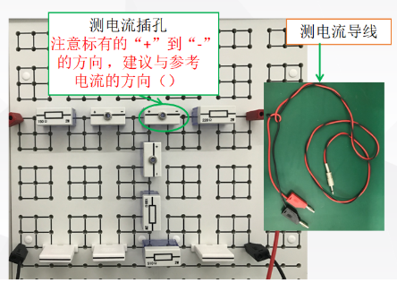
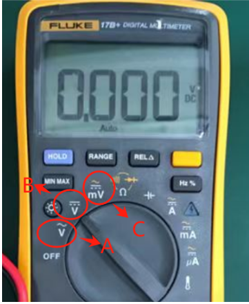
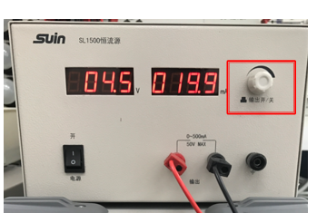
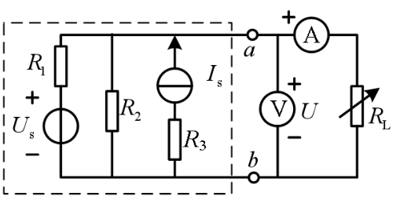

阅读序号1
若使用该直流稳压源输出10V的电压，可以使用该设备的哪个通道输出。

2
1
4
3
若使用该直流稳压源输出10V的电压，可以使用该设备的哪个通道输出。

2
1
4
3
测电流导线的一头插入测电流插孔中，另一头的红色端子需要接在电流表的正极性端，黑色端子接在电流表的负极性端，这样便将电流表串
联到测电流插孔所在的支路。故，建议在摆放时应使得测电流插孔从“+”到“-”的方向与电路参考电流方向（），否则所测电流方向为（）。

一致，负
一致，相等
相反，相等
相反，负
实验中，若测试电流，需要将电流表（）在电路中;若测试电压，需要将电压表（）在电路中
并联、并联
并联、串联
串联、并联
串联、串联
可调电位器在接入实验二的电路前，一定要先用万用表测试其阻值，保证以阻值调到合适值或调到最（）值接入电路，防止因为阻值过（），电流过（），烧坏电位器
大，大，大
大，小，大
小，大，大
小，小，大
若使用万用表的电压档测量5V的直流电压，应将旋钮调到图中哪个档位

皆可
A
C
B
使用万用表测量电压Uab，红色表笔与（）端连接，黑色表笔（）端连接
b，a
b，b
a，a
a，b
实验时，要认真检查电路，防止电压源处于（）状态，电流源处于（）
开路、短路
开路、开路
短路，短路
短路、开路
电流源使用时，旋转按钮表示（）按下按钮表示（）

不确定
电压调节、输出
输出、电流调节
电流调节，输出
实验时，电压源单独作用时，需要电流源处开路，如何做使电流源处开路呢
仅仅拔掉电流源所在电路中的导线即可
关闭电流源，将电流源所在的支路用导线连接
仅仅关闭电流源即可
关闭电流源，拔掉电流源所在电路中的导线
下图中（）表示有源一端口的输出

b
a,b点
a
不确定